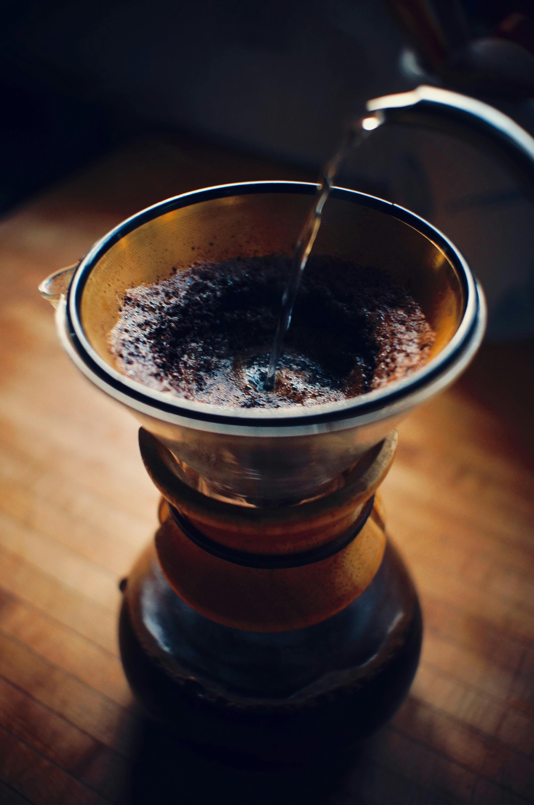
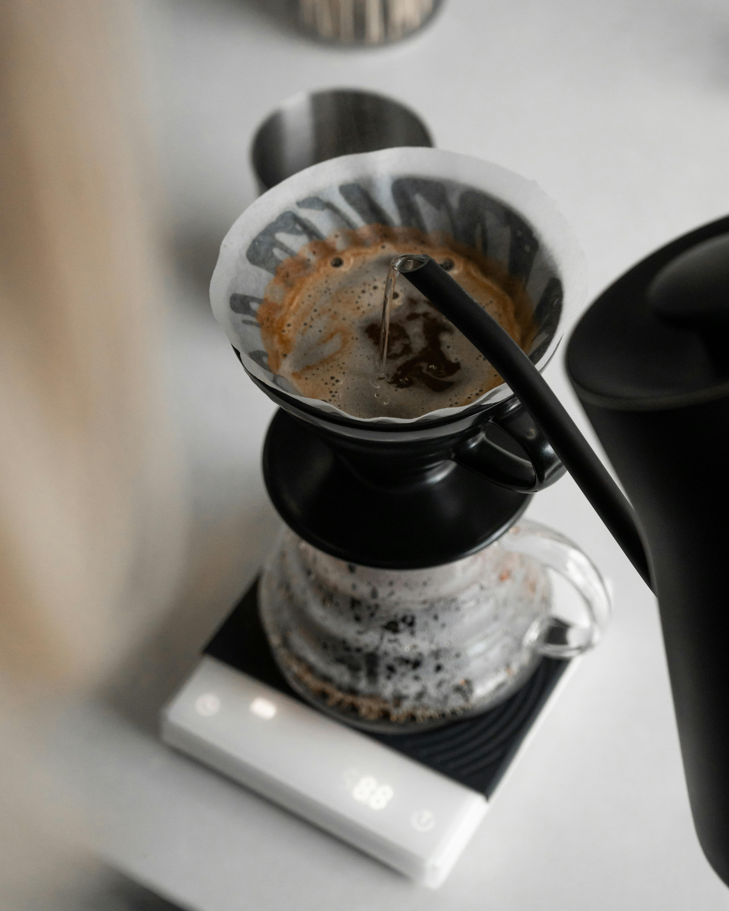

El resurgimiento del café artesanal en Chile
Descubre el sabor, la cultura y la experiencia detrás de una taza bien hecha.
Explorar métodosUna historia que renace
Texto sobre el auge del café artesanal, cafés de especialidad, microtostadores y cultura en crecimiento en Chile.
Métodos de filtrado artesanal

Chemex
Descripción breve del método Chemex.
Prensa francesa
Descripción breve del método francés.

V60
Descripción breve del método V60.

Espresso
Descripción breve del espresso artesanal.
¿Por qué elegir café artesanal?
- Sabor más puro y complejo
- Origen controlado y ético
- Apoyo a productores locales
- Proceso más natural